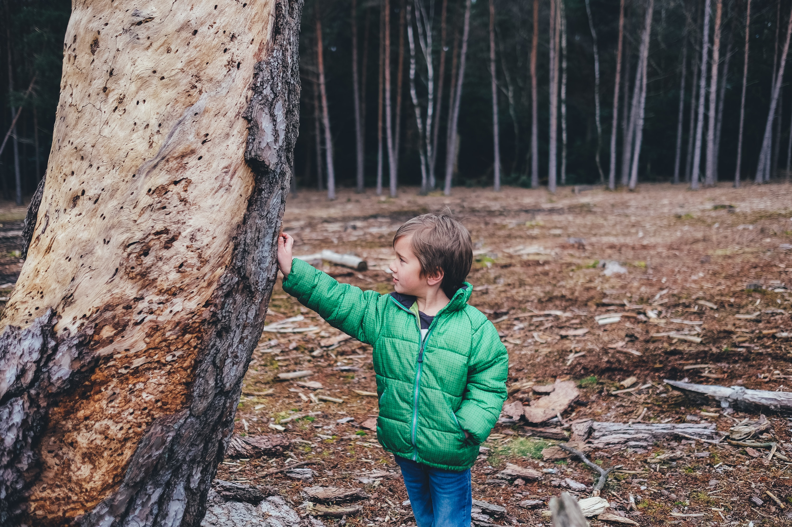

Fake National Park has everything you need to enjoy nature: just nature. Don't take our word for it though, hear from satisfied explorers.
As a photographer, Fake National Park has provided endless material. The sheer beauty of unaltered nature has truly inspired me artistically.
-Cody Natureenjoyer

I aspire to be a lumberjack. With that in mind Fake leaves me conflicted. On one end I see a forest with a lot of potential. On the other I hear of 'protective laws'.
-Jack Lumber
I imigrated here due to a food shortage in my hometown. Fake has resolved that issue, as there are giants that provide food. Though in exchange I have to put up with a bit more noise during the day.
-Scorrel McAcornson